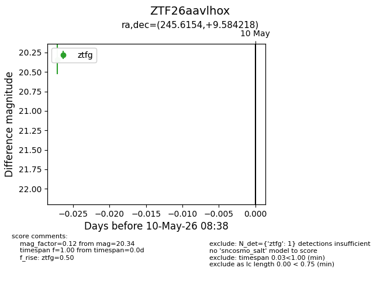
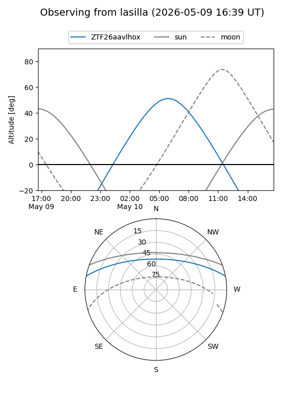
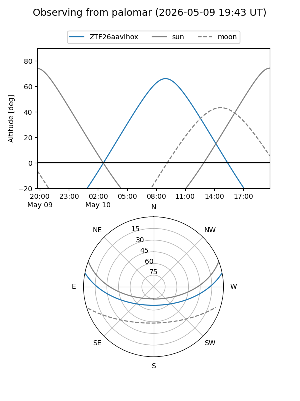
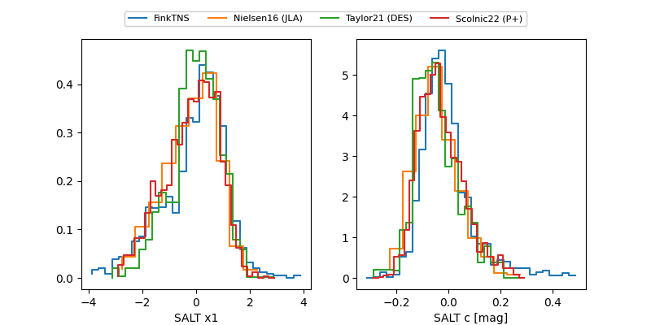

ZTF26aavlhox
Target ZTF26aavlhox at 2026-05-10 08:41
Aliases and brokers:
FINK: link
Lasair: link
ALeRCE: link
alt names
ZTF26aavlhox (ztf,fink_ztf)
Coordinates:
equatorial (ra, dec) = 245.6154,+9.58422
equatorial (HMS+DMS) = 16:22:27.70,+09:35:03.19
galactic (l, b) = (23.9597,+37.37526)
Flags:
Photometry:
last ztfg=20.34
1 ztfg detections
Lightcurve

Visibility


Additional plots
